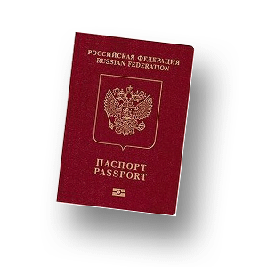
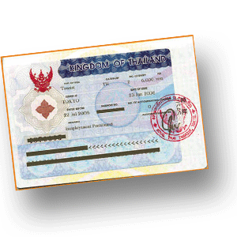
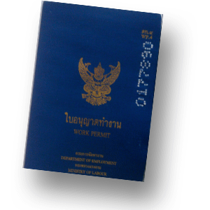

Визы в Таиланд

Нужна ли виза в Таиланд?!
Таиланд – одно из немногочисленных государств, в которых паспортно-визовый режим для граждан России максимально облегчен. Россия и Таиланд подписали соглашение, по которому граждане Российской Федерации могут находиться в Таиланде без оформления визы сроком до 30 дней. Это соглашение действует с 24 марта 2007 года по сей день.
Возникает вопрос: «Что же делать, если есть желание или потребность находиться в Королевстве более длительный срок?»
Ответ: «Для пребывания на территория страны более 30 дней требуется оформление визы в Таиланд!»
Самое главное понять: сколько времени Вы хотите провести в стране.
- Если Вы планируете находиться в Королевстве 3 месяца
Оформляем визу в Таиланд в России. Консульский сбор за визу составляет 40 долларов США. От Вас потребуются: авиабилеты туда и обратно, загранпаспорт, справка из банка о наличии денежных средств в сумме 800 долларов США на человека.
- Если Вы планируете находится в Королевстве 6 месяцев
Оформляем визу в Таиланд в России. Консульский сбор за визу составляет 80 долларов США. От Вас потребуются: авиабилеты туда и обратно, загранпаспорт, справка из банка о наличии денежных средств в сумме 800 долларов США на человека, авиабилеты или бронь авиабилетов для совершения перелета в соседнюю с Таиландом страну, бронь отеля. При оформлении вышеуказанной визы Вы должны единожды выехать из Таиланда.
- Если Вы планируете находится в Королевстве более 6 месяцев

Оформляем визу в России или в Таиланде. Это учебная виза, которая дает право пребывания в стране год, с возможностью продления на много-много лет, по Вашему желанию, т.к. сначала Вы поступаете на курсы английского языка и можете их посещать 2 года, потом тайского, потом китайского, потом испанского и так еще несколько языков Вы можете учить, параллельно живя легально в стране улыбок. Далее можно пойти обучаться массажу, эти курсы тоже дают право проживания в стране и получения годовой визы в Таиланд.
При оформлении учебной визы в России, Вам не придется выезжать из Таиланда через 30 дней после прибытия, в связи с этим нести дополнительные расходы, а также в спешке оформлять документы. Вы оплачиваете обучение в выбранной языковой школе. Школа присылает необходимые Вам документы для оформления визы в Таиланд. После этого Вы идете в консульство и получаете визу. Расходы по данному типу визы составляют порядка 1200 долларов США за человека в год, включая обучение выбранному языку, как правило, два раза в неделю по два часа, учебные материалы и визу.
Также, к вышеуказанному типу визы можно отнести Опекунскую визу. Если Ваш ребенок учится в Таиланде, то один из родителей имеет право на опекунскую визу, для этого Вы оформляем визу в Таиланд на ребенка способом аналогичным с оформлением учебной визы для взрослого, а родитель прицепляется к визе ребенка «паровозиком».
- Если Вы планируете вести в Таиланде бизнес

Необходимо зарегистрировать компанию и получить разрешение на работу (work permit + годовая виза):
• Необходимо трудоустроить 4 тайца на каждого принятого на работу иностранца
• Уставной капитал 70000 долларов США на каждого трудоустроенного иностранца
• Затраты на бухгалтерию и аудиторский учет для небольших объемов около 1500 долларов США/год
• Раз в год вам придется продлевать work permit и, соответственно, визу, при этом показывая вашу зарплату и, естественно, уплачивая с нее все налоги.
• Продление осуществляется без выезда из страны в местном иммиграционном офисе
Обращаем Ваше внимание, что для открытия и регистрации компании в Таиланде, обязательно нужно иметь контакты хорошего юриста-адвоката. Только в этом случае, Вы застрахованы от неприятностей, а также благодаря юристу, Вы будете единственным полноправным владельцем компании.
- Если Вам более 50 лет, можно оформить пенсионную визу
Виза разрешает пребывание в Таиланде сроком на 1 год со дня въезда в страну, далее продлевается еще на год неограниченное количество раз. Для получения пенсионной визы, Вам должно быть более 50 лет, Вы должны не иметь криминального прошлого и запрещенных в Таиланде заболеваний. На счет заявителя в тайском банке должны поступить средства из-за рубежа в размере 25000 долларов США на человека и пролежать на депозите 3 месяца (до моменты подачи заявления на оформления визы), как подтверждение средств на проживание. После окончания указанного срока денежными средствами можно пользоваться. Виза может быть получена в консульствах Таиланда любой страны или в офисе Иммиграционной службы Таиланда в Бангкоке. Стоимость визы примерно 100 долларов США.
Если вы не успели оформить визу в Таиланд в Росии и при этом Вас интересует относительно недолгое пребывание в стране т.е. Более разрешенных 30 дней, но при этом не более 3-4 месяцев, то есть такой вариант, как виза-ран. Что же такое Виза-ран (Visa-run)?
Итак, если срок Вашего пребывания в Таиланде более 30 дней, и Вы заблаговременно не оформляли визу в Москве, то Вы должны выехать за пределы Таиланда до истечения срока разрешенных 30 дней и снова въехать в страну. Таким образом, Вы получаете право на нахождении в Таиланде в течение еще 30 дней. Поскольку эта проблема встает перед многими иностранцами, различные тур-агентства предлагают свои услуги по организации групповых поездок из различных городов/островов Таиланда (как правило, туристических) на границу с соседними государствами. Такое путешествие называется виза-ран, длится обычно один-два дня и стоит от 70 до 150 долларов на человека.
Очень часто задается вопрос: «Нужно ли оформлять визу на ребенка?»
Ответ: «Да, нужно. Оформление визы на ребенка не несет больших финансовых затрат, но полностью гарантирует Вам и Вашему ребенку в будующем отсутствие проблем с иммиграционной службой Таиланда».
Если обладателю любого типа визы (кроме визы по прибытию бизнес-визы) необходимо на время выехать из страны, а виза не предусматривает повторного въезда в страну, то необходимо до выезда получить дополнительное право на возвращение в Королевство – специальный штамп в паспорте в дополнение к действующей визе - разрешение на дополнительный въезд (ре-энтри пермит). При возвращении в Таиланд разрешенный срок пребывания в стране будет таким же, как и до получения ре-энтри пермита. Однократный ре-энтри пермит стоит порядка 30 долларов США, многократный порядка 130 долларов США. Данное разрешение можно получить в любом офисе Иммиграционной службы Таиланда.
Сотрудники компании Navigating Thailand готовы оказать Вам поддержку по всем визовым вопросам в Таиланде.
Для Вас мы предлагаем помощь в оформлении:
- однократной визы в Таиланд сроком на 3 месяца
Перечень документов:
1) оригинал загранпаспорт (срок действия не менее 6 месяцев со дня начала поездки)
2) анкета в посольство (заполняют сотрудники компании Navigating Thailand, Вы ставите подпись)
3) фотография цветная 1 шт. (размер 3*4/ 3,5*4,5/ 4*6 на выбор)
4) справка с работы на английском языке (если на английском языке невозможно, то ОБЯЗАТЕЛЬНО перевести и заверить у НОТАРИУСА) (справка подтверждает, что Вы трудоустроены в организации и занимаете определенную должность, предоставляется для предъявления по месту требования)
5) справка из банка, которая подтверждает наличие у Вас на счету определенной суммы денежных средств из расчета 20 000 рублей на человека на английском языке (если на английском языке невозможно,то ОБЯЗАТЕЛЬНО перевести и заверить у НОТАРИУСА).
Если нет счета в банке, то Вы предоставляете копии тревел-чеков (сумма на человека минимум 800 долларов США).
6) бронь отеля или иной документ подтверждающий Ваш адрес пребывания в Таиланде
7) бронь международного авиабилета
Если едут несовершеннолетние дети:
1) копия свидетельства о рождении детей (ОБЯЗАТЕЛЬНО перевести и заверить у НОТАРИУСА)
2) если дети посещают учебное заведение, то Вы предоставляете справку с места с учебы на английском языке (если на английском языке невозможно,то ОБЯЗАТЕЛЬНО перевести и заверить у НОТАРИУСА).
11) если ребенок выезжает с одним из родителей, то Вы предоставляете разрешение на выезд от другого родителя, а также копию разрешения, которую ОБЯЗАТЕЛЬНО нужно перевести и заверить у НОТАРИУСА.
- двухкратной визы в Таиланд сроком на 6 месяцев
1) оригинал загранпаспорт (срок действия не менее 6 месяцев со дня начала поездки)
2) анкета в посольство (заполняют сотрудники компании Navigating Thailand, Вы ставите подпись)
3) фотография цветная 1 шт. (размер 3*4/ 3,5*4,5/ 4*6 на выбор)
4) справка с работы на английском языке (если на английском языке невозможно, то ОБЯЗАТЕЛЬНО перевести и заверить у НОТАРИУСА) (справка подтверждает, что Вы трудоустроены в организации и занимаете определенную должность, предоставляется для предъявления по месту требования)
5) справка из банка, которая подтверждает наличие у Вас на счету определенной суммы денежных средств из расчета 20 000 рублей на человека на английском языке (если на английском языке невозможно,то ОБЯЗАТЕЛЬНО перевести и заверить у НОТАРИУСА).
Если нет счета в банке, то Вы предоставляете копии тревел-чеков (сумма на человека минимум 800 долларов США).
6) бронь отеля или иной документ подтверждающий Ваш адрес пребывания в Таиланде
7) бронь международного авиабилета
8) бронь авиабилета в соседнюю с Таиландом страну (например, Камбоджа, Лаос и др.)
9) бронь отеля или иной документ подтверждающий Ваш адрес пребывания в соседней с Таиландом стране (например, Камбоджа, Лаос и др.)
Если едут несовершеннолетние дети:
1) копия свидетельства о рождении детей (ОБЯЗАТЕЛЬНО перевести и заверить у НОТАРИУСА)
2) если дети посещают учебное заведение, то Вы предоставляете справку с места с учебы на английском языке (если на английском языке невозможно,то ОБЯЗАТЕЛЬНО перевести и заверить у НОТАРИУСА).
3) если ребенок выезжает с одним из родителей, то Вы предоставляете разрешение на выезд от другого родителя, а также копию разрешения, которую ОБЯЗАТЕЛЬНО нужно перевести и заверить у НОТАРИУСА.
Срок оформления вышеуказанного типа визы составляет 3-4 рабочих дня.
Стоимость услуг компании Navigating Thailand, если Вы предоставляете полный пакет документов составляет:
* 1 паспорт 3500 руб
* 2-4 паспорта по 2500 руб за каждый паспорт
* 5 паспортов и больше по 1500 руб за каждый паспорт
Консульский сбор 40 долларов США за один паспорт – 3-х месячня виза, 80 долларов США за один паспорт – 6-ти месячная виза, в том числе на детей, даже если они вписаны в паспорт.
В случае, если у Вас нет возможности предоставить полный комплект документов, пожалуйста, обращайтесь в компанию Navigating Thailand, мы постараемся Вам помочь в индивидуальном порядке.
- учебной визы в Тайланд сроком на 1 год
Стоимость услуг компании Navigating Thailand составляет 100 долларов США за один паспорт. В стоимость входит:
- помощь в выборе языковой школы,
- координация работы,
- оформление документов,
- координация и контроль оплаты,
- пересылка документов необходимых для оформления учебной визы в посольстве
*В случае, если Вам требуется помощь непосредственно в посольстве т.е. у Вас нет желания самостоятельно оформлять догкументы, то:
1 паспорт 3500 руб
2-4 паспорта по 2500 руб за каждый паспорт
5 паспортов и больше по 1500 руб за каждый паспорт
- бизнес-визы (Work Permit)
Все вопросы касательно оформления бизнес-визы (Work Permit) и регистрации компаний на территории Таиланда обсуждаются лично и индивидуально.